第一章 · 迷霧
邊走邊解開，像在手帳上上色
按下「開始探索」出門走走，走過的路會從水彩紙般的迷霧裡透出來，邊緣還有顏料乾掉時那圈深色的痕跡。
- 寫實或水彩，一鍵切換要看清楚路就用寫實地圖，想欣賞就換成水彩畫風。
- 走路、騎車、搭車都分得出來走路解開大範圍，騎車開車只解開一條細線，搭高鐵、飛機不算數。
- 忘了開也能補登選旅途中拍的照片，或匯入運動手錶、Strava、Google 地圖時間軸，就會補上那天走過的地方。
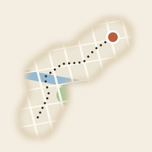
霧旅 登入TRAVEL FOG · 旅行迷霧地圖
霧旅是一張會隨著你旅行、慢慢解開的地圖。走到哪裡，水彩迷霧就散到哪裡；吃過的店、買過的伴手禮、只想自己知道的秘密景點，都記在你走過的路上。
用 iPhone 的 Safari 打開就能玩，不用下載。
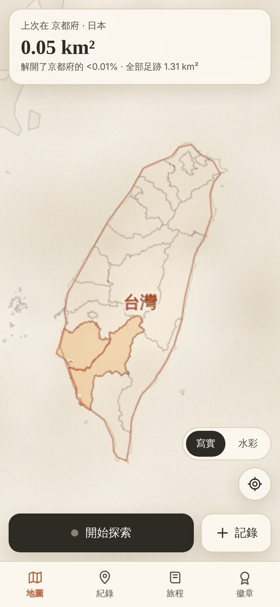
一開始，整張地圖都是一片迷霧。
每一次出門、每一趟旅行，都會讓世界多亮一點。
第一章 · 迷霧
按下「開始探索」出門走走，走過的路會從水彩紙般的迷霧裡透出來，邊緣還有顏料乾掉時那圈深色的痕跡。
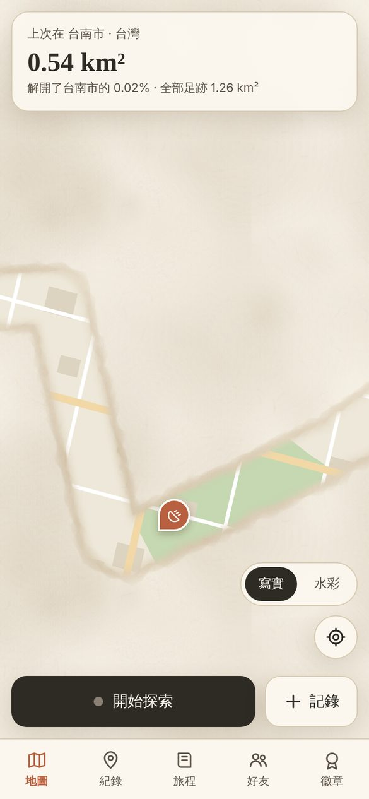
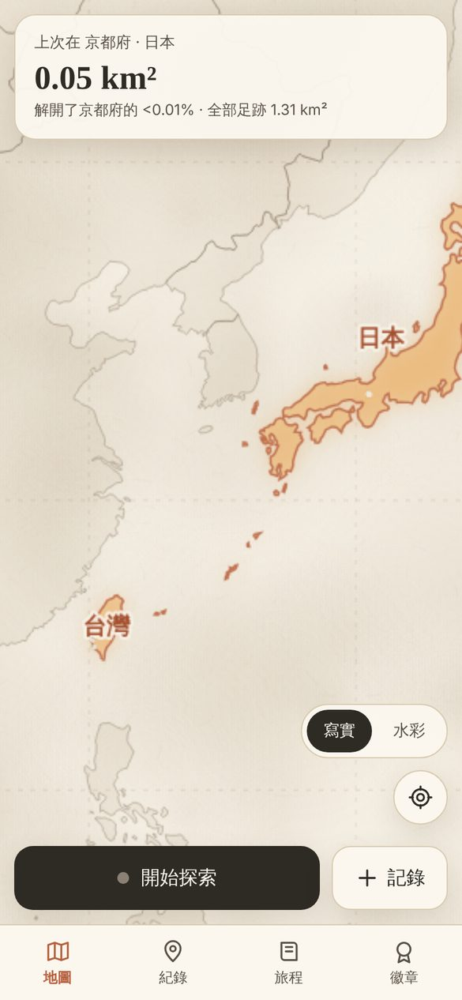
第二章 · 收集
地圖拉遠，迷霧上會浮現經緯線和國界，像一張舊地圖。去過的國家亮起燈，拉近一點，換成縣市和地區一格一格亮起來。
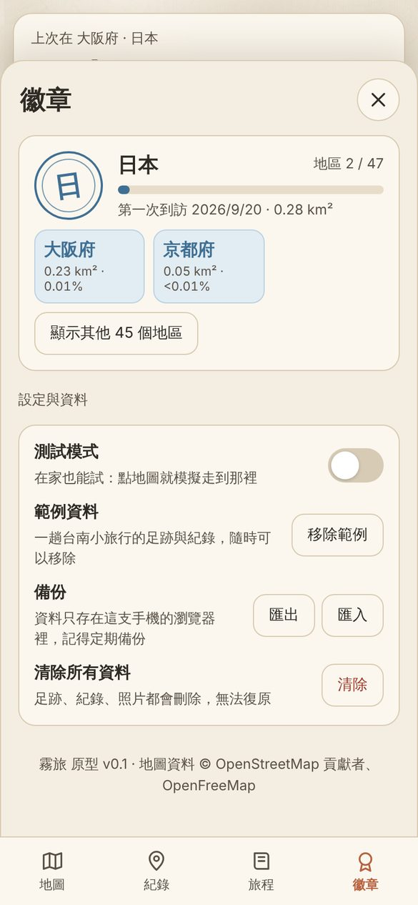
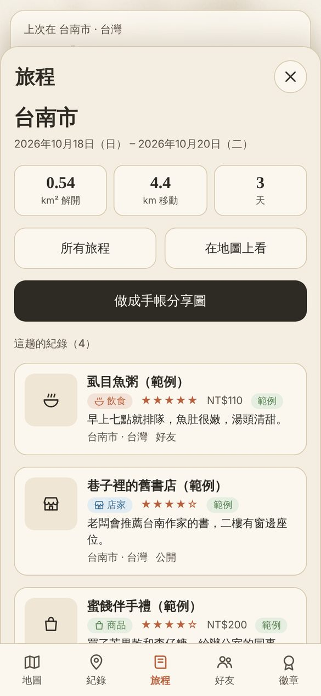
第三章 · 紀錄
吃到好吃的、逛到喜歡的店、找到看夕陽的好地方，按一下「記錄」就存下來，釘在你當時站的位置。
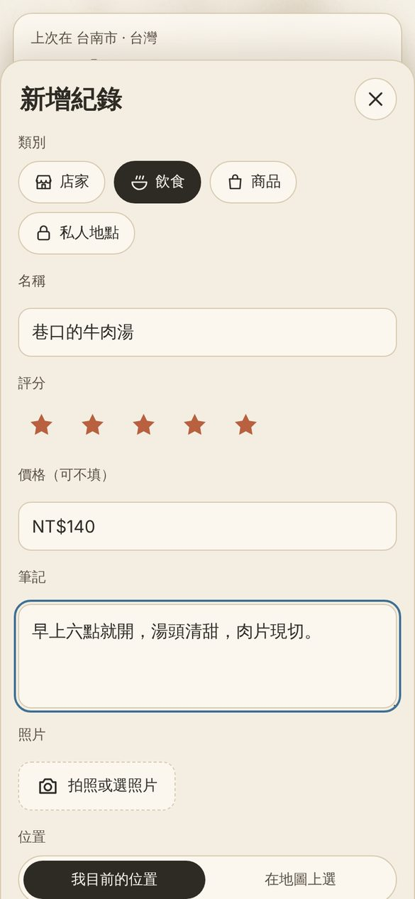
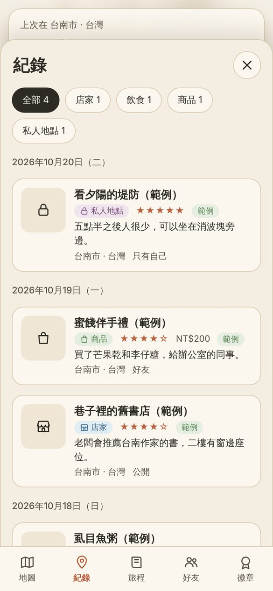
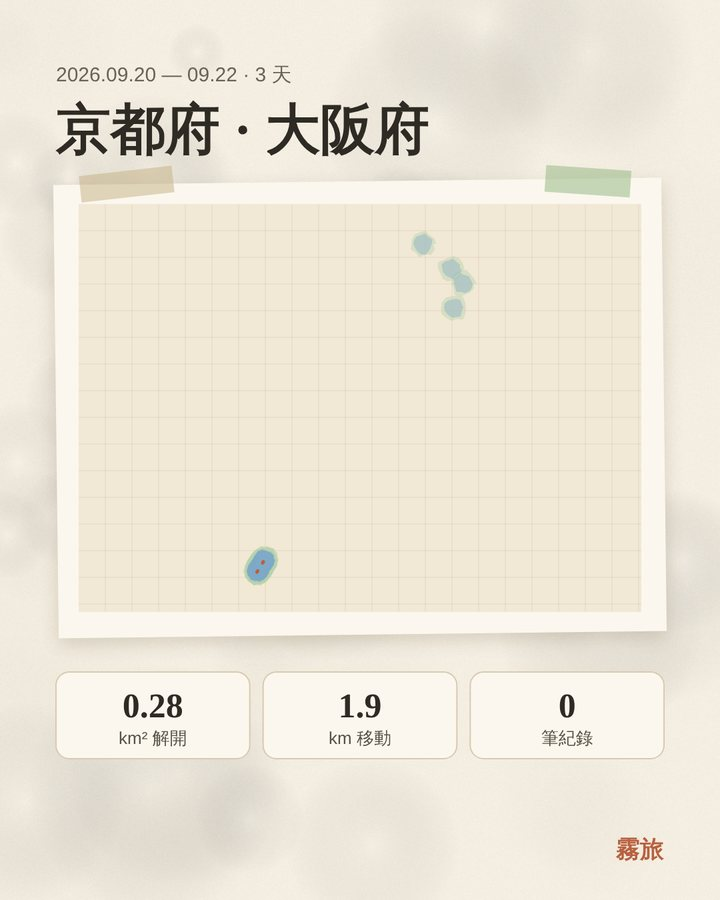
旅程手帳
打開任何一趟旅程，按「做成手帳分享圖」，就會畫出一張水彩風格的紀念頁：這趟的足跡、解開的面積、走過的距離，和沿途記下的店家美食。可以直接分享給朋友，或存進相簿。
第四章 · 好友
交換 6 碼好友碼就能加好友。朋友的足跡會用他專屬的顏色畫在你的地圖上，他推薦的店也會變成地圖上的圖釘。
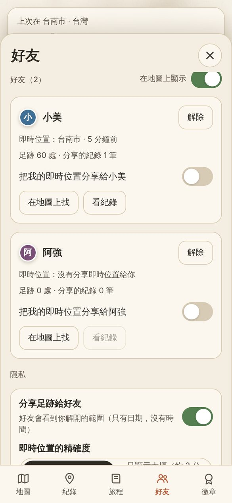
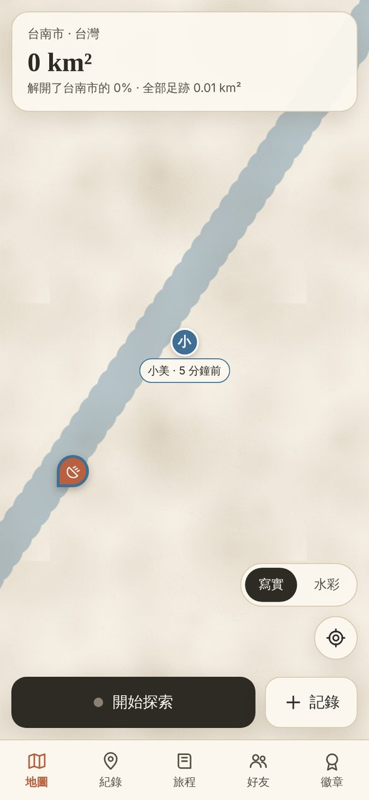
現在就能用的功能，全部免費。
走過的地方自動解開，可切換寫實與水彩畫風。
經緯線與國界浮在迷霧上，去過的國家、縣市亮燈。
台灣 22 縣市、日本 47 都道府縣，約 230 國都能收集。
店家、飲食、商品、私人地點，附照片、評分與價格。
離開常住地自動成為一趟旅程，整理好每趟的數據。
每趟旅程一鍵畫成水彩手帳頁，分享或存進相簿。
從照片位置、GPX 軌跡、Google 地圖時間軸匯入。
好友足跡、好友推薦，即時位置逐一開關。
登入後自動備份，換手機登入就能拿回所有足跡。
位置是很私人的事。霧旅把隱私規則寫在資料庫裡，不是只靠畫面上的開關。
iPhone app 版正在準備中。裝好 app 之後，手機放在口袋裡也會自動記錄足跡，不用一直開著畫面。